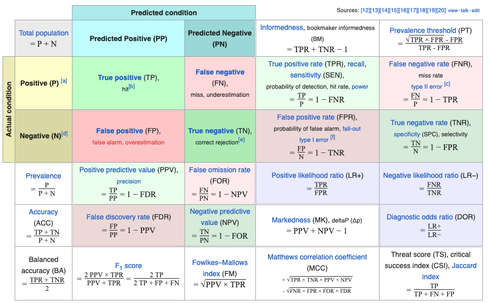
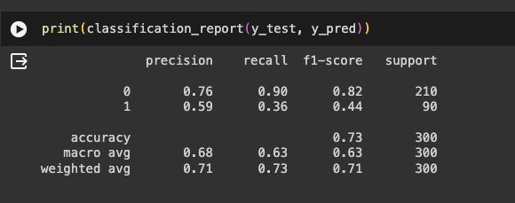
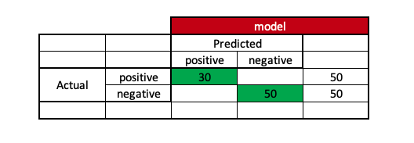
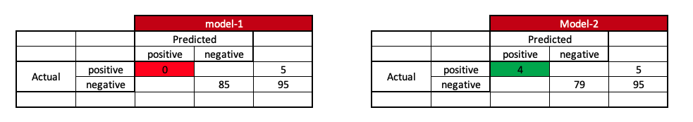
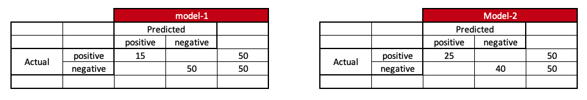
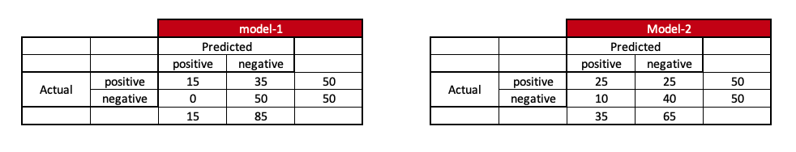
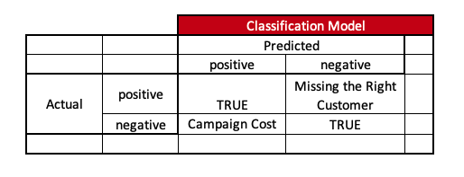
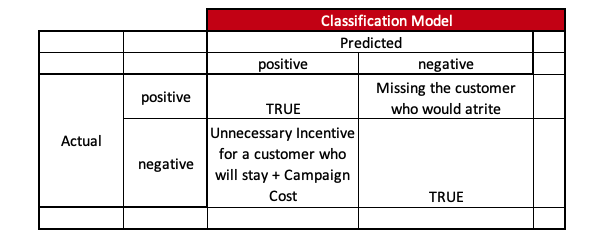
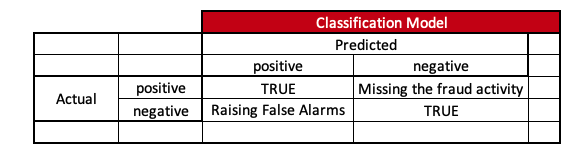

This blog is a response to my teammates’ questions on WhatsApp. I’m sharing what I learned and my views on each question in a separate blog.
The biggest challenge in classification modelling is choosing the right metric for our problem. Adding to this, the confusion matrix creates more confusion for us as it has more metrics than we imagine.
Let’s cut short this, Arun. Ask for GenAI tools; we rely on them.
Go through this ChatGPT link response. It will not help. Why?
Arun! prompt has to be more specific.
Okay! Okay! Here is a revised prompt response from ChatGPT. Still, It doesn’t help. Why?
It is because we, humans, need to decide what the right metric is. For this, Data Scientists need to step up and do three essential things which are usually not in their comfort zone:
- Speak to business stakeholders and understand their purpose again.
- Also, understand how they will use our predictions.
- Finally, before jumping into modelling and its coding, check whether the dependent variable is defined per the business purpose and its corresponding usage.
Step three is the recipe for experience, i.e., multiple tries and failures, which this blog will not discuss.
1. Confusion Matrix
Understanding the details of the Confusion Matrix is fundamental.

The top four boxes are the result of prediction vs actual. The remaining boxes are divided metrics based on the numbers.
At this point in this blog, let’s not delve into these multiple metrics, as there are many :).
2. Simpler Thumb Rules
The more straightforward thumb rule is to print the classification report from sci-kit Learn and use one of these metrics for our classification modelling. This is an excellent place to start, as most of the ML problems we solve commercially fall into these four metrics.

In most classification problems, the target class would be either a positive or negative; under this content, let us review the intuition behind these metrics.
2.1. Accuracy
In more straightforward English, it is how accurate you are. If there are 50 positive and 50 negative instances, accuracy measures how many times the model is able to predict accurately the right instances out of these 100 original instances.
If the model can correctly predict 30 positive and 50 negative instances, it means that the model’s accuracy is 80 correctly predicted instances out of the total 100 cases.

Using this metric is always a problem as there is a high chance of giving more accuracy under imbalanced class scenarios.
If there are 5 positive instances and 95 negative instances and model-1 can predict 0 positive instances and 85 negative instances, we say that model-1 has 85% accuracy. While model-2 can predict four positive instances and 79 negative instances, we say that model-2 has 83% accuracy.

When we look at the accuracy metric without having the context of our data, we may choose a poor model-1, which has higher accuracy.
2.2. Recall:
In more straightforward English, recall is how much your model can recall the scenario. In a binary classification model, we usually refer to recall to the positive class to ensure that the model recalls the maximum positive instances. It calculates the proportion of true positive predictions among all actual positive instances.
Returning to our earlier example, which model is better off if there are 5 positive instances and 95 negative instances for model-1 and model-2?
Here, if we want to be sure that the number of predicted positive instances upon actual positive instances should be more, we will select model-2 instead of model-1.
Now, let’s go back to our first example again, which is that there are 50 positive instances and 50 negative instances, and model-1 is able to predict 15 positive instances and 50 negative instances. Here, model 1 has almost 65% accuracy and a recall of 30% for positive instances. Similarly, model 2 can predict 25 positive and 50 negative instances. Here, model 2 has almost 65% accuracy and a recall of 50% for positive cases.
Model 2 is better when we look into recall metrics. Isn’t it so?

But, when completing the entire confusion matrix, it might look like this: do you see something off? What is the catch?

Model-1 doesn’t have any false alarms, which means the model-1 is more precise in predicting positive instances.
2.3. Precision:
In more straightforward English, precision is the degree to which the model is precise, like hitting a bull’s eye for positive instances. High precision signifies a low false positive rate. Mathemically it is like ratio of true positive predictions to the total positive predictions made by the model.
Under this scenario, model 1 is more precise.
2.4. F1-Score:
F1-Score is the harmonic mean of precision and recall. It provides a balance between precision and recall, making it a useful metric when there’s an uneven class distribution. A high F1-Score indicates both high precision and high recall.
Usually, while developing model we stick to one metric.
3. Why stick to one metric?
Often, rather than sticking to one model, it is wise to prepare multiple models, optimize them using the development dataset, and use the test set for the final performance. So, while optimizing and evaluating the models, it is advisable to stick to one metric because we cannot have different barometers for each model.
4. How to Choose
This part of the blog is the prime Purpose, which depends upon the two questions that Data Scientists need to ask the business stakeholders i.e.; Purpose and usage. Purpose gives the revenue for the model, and usage tells us the cost.
How come?
Let’s dwell on some examples.
4.1. Example - Cross-Sell
Purpose - Identify Customers who can buy Product1. Usage1 - Digital Campaigns ( Machine to Human ) Usage2 - Non-Digital Campaigns ( Human to Human )
If we look at the Purpose, we might think accuracy would be sufficient to predict whether a customer will buy a particular product. This is the usual de facto approach we think.
Now, depending on usage, we need to optimize the metric, as it also tells us the cost of the usage.

Usage1 -> Usually, digital campaigns are low-cost. We want to be sure to reach as many right customers as possible at a low cost. So, in this scenario, it is better to optimize the models using recall since we don’t want to miss the right customer.
Usage2 -> Usually, in non-digital campaigns, the cost is higher, and since the interaction is between humans, we have to ensure the trust chain of the model carries forward to the field team. So, in this scenario, it is better to optimize models using the precision metric.
4.2. Example - Customer Attrition
Purpose - Identify Customers who would stop transacting Usage1 - Carrot Communication in Digital way ( Machine to Human ) - Incentive Usage2 - Carrot Communication in Non-Digital way ( Human to Human ) - Incentive
If we look at the Purpose, we might think accuracy would be sufficient as we just want to predict whether a customer would at-rite. This is the usual de facto approach we would think.
Now, depending on usage, let’s optimize the metric.

Usage1 -> Although digital campaigns are low-cost here, we need to ensure we predict all customers who will at-rite and give-away fewer incentives to the customers who actually don’t at-rite. So, in this scenario, it is better to optimize the models using the F1-Score metric.
Usage2 -> Since trust-chain matters a lot in non-digital campaigns, apart from cost, it is better to optimize models using the precision metric.
4.3. Example - Fraudulent Transaction
Purpose - Identify Customers’ accounts of fraudulent activity. Usage1 - Digital Alarm ( Machine to Human ) Usage2 - Non-Digital Alarm ( Human to Human )
If we just look at the Purpose, we might think that by default, we will select the Precision metric to ensure that fraudulent activity is arrested.
Now, depending on usage, let’s optimize the metric.

Usage1 -> Since digital campaigns are low-cost here, we must ensure we predict all fraudulent activities with fewer false alarms. So, it is better to optimize the model with F1-Score.
Usage2 -> Since cost and trust-chain until customer matters a lot in non-digital campaigns, it is better to optimize models using the precision metric. However, in some scenarios F1-Score can be used if it is digitally assisted.
So, to summarize, we need to optimize the model based on the chosen metric of Purpose and usage, which is highly based on the context and business usage.
5. Can we change the metric if model perform is poor?
If we are unable to make goals, it is never advisable to change our goalpost. We always need to understand whether the goal post design is correct and then practice to make goals.
6. Further Discussions
Macro-average and weighted-average are not discussed here, which are better suited for discussing classification models with multiple class outcomes instead of binary ones.